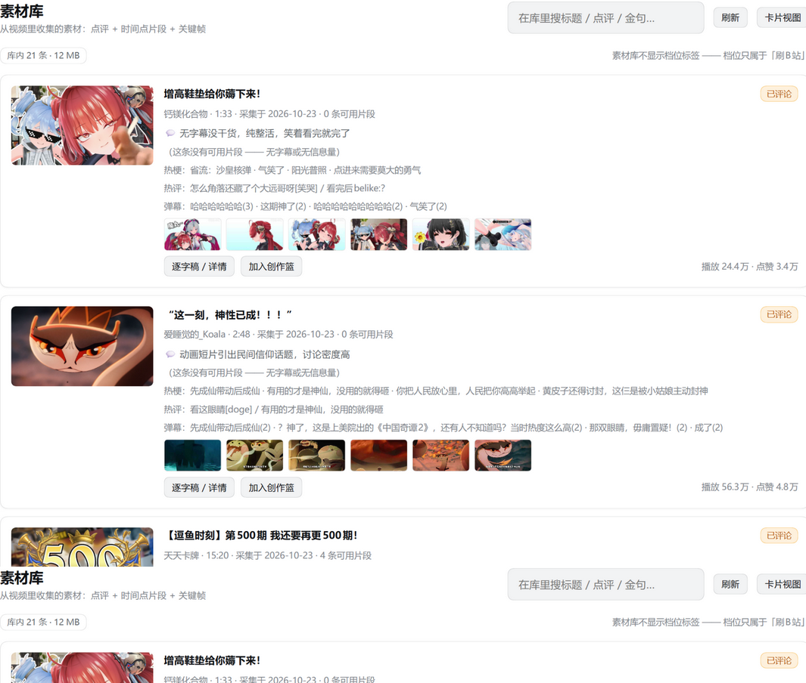

一个 DSH（DeepSeek Harness） 插件：把「刷 B站 / 素材库 / AI 出片 / 审核发布 / 自动互动」放进同一个工作台。
刷B站采素材 → 记忆沉淀 → AI 出片 → 审核发布 → 自动互动
dsh plugin --profile web add github:Userluckytian/dsh-bili-workbench

不是又一个「B站信息流面板」，而是一条从看到做再到发的完整流水线。
视频元数据、逐字稿（带时间戳）、关键帧、封面、AI 点评、可引用金句，外加热评 / 弹幕 / 热梗。按 BV 幂等，7 天内不重复抓——同一条视频只采一次。
综合热门 / 关键词搜索 / 看懂视频。按多时段 + 每日上限自动采集，每条采完自动判定、抽句、抓热评弹幕热梗、刷新日报。
转场 · 音效 · BGM · 字幕样式 · 动画形象 · 真实片段 · 小剧场。一句话出方案 → 改一版（v1/v2…）→ 真实帧 + Edge-TTS 配音 + Remotion 渲染 1080p 成片与封面。
待审列表、通过 / 打回、预览成片、投稿 dry-run。真投稿默认关；打开后仍需二次确认，删成片也要确认。
刷到的视频沉淀为素材记忆，日报与判定结论长期留存，出片引擎从记忆库里取真实帧和金句，越用越懂你的频道。
可选：每条采到的视频自动留一条评论并 @ 你；有人回复就自动回。主人身份与只读指令、12 秒发送间隔 + 每日上限，默认关。
>= 0.2.1-rc.1（dsh --version）>= 22bili-agent，命令名 bili）—— 账号操作的「手」dsh plugin --profile web add github:Userluckytian/dsh-bili-workbenchuv tool install bili-agent 并 bili auth login 扫码；winget install Gyan.FFmpeg；可跑 node scripts/doctor.mjs 自检。<store>/../assets-src/（voices / clips / memes / bgm / stickers），可用环境变量 BILI_ASSETS 指向你的素材目录（优先级最高，改后重启生效）。目录不存在时素材页会提示，可在「我的 → 自检」查看状态。